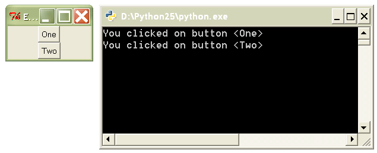

Decorator Recipe: Event Binding in Tkinter¶
Step 2¶
Unlike other event handling mechanisms in Tkinter, “command” callbacks do not accept the target widget. This means that we can’t do something like this:
@btn1.command
@btn2.command
def onclick(target):
print 'You clicked on button <%s>' % target['text']
Modify the MyButton.command method to make the above example work correctly.
from Tkinter import *
class MyButton(Button):
def command(self, func):
# Provide new logic here
return func
if __name__ == '__main__':
frame = Frame()
frame.master.title("Event binding with decorators")
frame.pack()
btn1 = MyButton(frame, text="One")
btn1.pack()
btn2 = MyButton(frame, text="Two")
btn2.pack()
@btn1.command
@btn2.command
def onclick(target):
print 'You clicked on button <%s>' % target['text']
frame.mainloop()
Expected output:
Solution: solutions/tkinter2.py